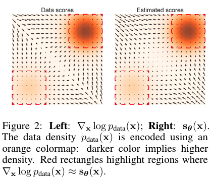
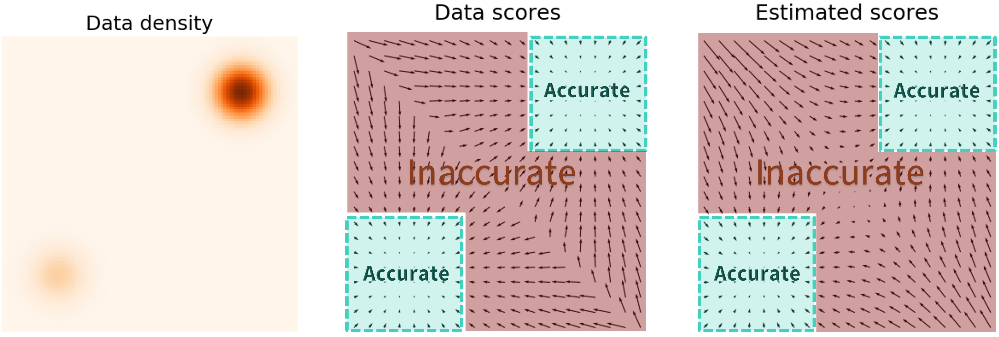
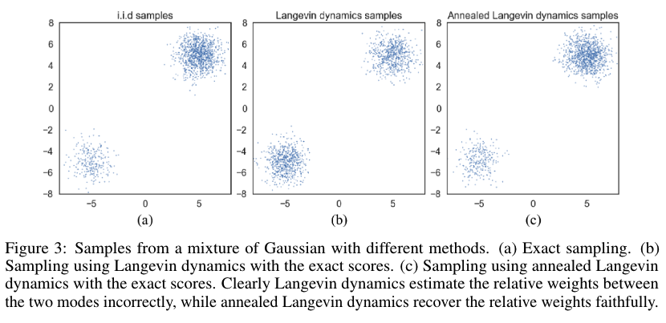
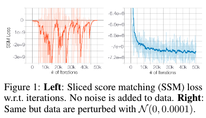

Score based methods
TOC
- 1. Score-based generative modeling
- 2. Sampling with Langevin Dynamics
- 3. Challenges
- 4. Contributions of NCSN
Reference:
Official links:
Noise Conditional Score Networks (NCSN) (NeurIPS 2019)
- Paper: Generative Modeling by Estimating Gradients of the Data Distribution
- Blog: https://yang-song.net/blog/
- Github: https://github.com/ermongroup/ncsn
1. Score-based generative modeling
Given a probability density function (PDF) \(p(x)\), the ‘score’ is defined as \(\triangledown_x \log p(x)\), or the gradient of the log-likelihood of the object \(x\) w.r.t the input dimensions \(x\), notably not w.r.t the model parameters \(\theta\). We will assume that PDFs are continuous random variables. The score is a vector field of the gradient at any point \(x\). This gradient of \(\log p(x)\) tells us the directions in which to move if we want to increase the likelihood as much as possible.
The score-based network \(s_\theta: \mathbb{R}^D \rightarrow \mathbb{R}^D\) is a neural network parameterized by \(\theta\), which will be trained to approximate the score of \(p_ {data}(x)\) ( \(\triangledown_x\log p(x)\) ). The framework of score-based generative modeling has two ingredients: score matching and Langevin dynamics.
score matching for score estimation
Using score matching, we can directly train a score network \(s_\theta(x)\) to estimate \(\triangledown_x \log p(x)\) without training a model to estimate \(p_ {data}(x)\) first.
The objective minimizes \(\frac{1}{2} \mathbb{E}_ {p_ {data}(x)}[\parallel s_\theta(x)-\triangledown_x \log p_ {data}(x)\parallel_2^2]\), which can be shown equivalent to the following up to a constant
\begin{equation} \mathbb{E}_ {p_ {data}(x)}[\text{tr}(\triangledown_xs_\theta(x))+\frac{1}{2}\parallel s_\theta(x)\parallel _2^2] \end{equation}
where \(\triangledown_xs_\theta(x)\) is the Jacobian (first-order partial derivatives) of \(s_\theta(x)\). Note that the trace of a square matrix \(A\), denoted \(\text{tr}(A)\), is defined to be the sum of elements on the main diagonal (from the upper left to the lower right) of \(A\).
In practice, the expectation over \(p_ {data}(x)\) can be quickly estimated using data samples. However, score matching is not scalable to deep networks and high dimensional data due to the computation of \(\text{tr}(\triangledown_xs_\theta(x))\). Below are the two popular methods for large scale score matching.
1.1. Denoising score matching
A variant of score matching that completely circumvents \(\text{tr}(\triangledown_xs_\theta(x))\). It first perturbs the data point \(x\) with a pre-specified noise distribution \(q_\sigma(\tilde{x}\vert x)\) and then employs score matching to estimate the score of the perturbed data distribution \(q_\sigma(\tilde{x}) \triangleq \int q_\sigma(\tilde{x}\vert x)p_ {data}(x)dx\). The objective was proved equivalent to the following:
\begin{equation} \frac{1}{2} \mathbb{E}_ {q_\sigma(\tilde{x}\vert x)p_ {data}(x)}[\parallel s_\theta(\tilde{x})-\triangledown_ {\tilde{x}}\log q_\sigma(\tilde{x}\vert x)\parallel _2^2] \end{equation}
1.2. Sliced score matching
Sliced score matching uses random projections to approximate \(\text{tr}(\triangledown_xs_\theta(x))\) in score matching. The objective is
\begin{equation} \mathbb{E}_ {p_v}\mathbb{E}_ {p_ {data}}[v^T \triangledown_x s_\theta(x)v + \frac{1}{2} \parallel s_\theta(x)\parallel _2^2] \end{equation}
where \(p_v\) is a simple distribution of random vectors, e.g., the multivariate standard normal. The term \(v^T \triangledown_x s_\theta(x)v\) can be efficiently computed by forward mode auto-differentiation. Unlike denoising score matching which estimates the scores of perturbed data, sliced score matching provides score estimation for the original unperturbed data distribution, but requires around four times more computation due to the forward mode auto-differentiation.
2. Sampling with Langevin Dynamics
Langevin Monte Carlo is a Markov Chain Monte Carlo (MCMC) method for obtaining random samples from probability distributions for which direct sampling is difficult. The goal is to “follow the gradient but add a bit of noise” so as to not get stuck at the local optima regions and thus we are able to explore the distribution and sample from it. It approximately works by gradually moving a random initial sample to high density regions along the (estimated) vector field of scores.
Langevin dynamics can produce samples from a probability density \(p(x)\) using only the score function \(\triangledown_x \log p_ {data}(x)\). Given a fixed step size \(\epsilon > 0\), and an initial value \(\tilde{x}_0 \sim \pi(x)\) with \(\pi\) being a prior distribution, the Langevin method recursively computes the following
\begin{equation} \tilde{x}_ t = \tilde{x}_ {t-1} + \frac{\epsilon}{2} \triangledown_x \log p(\tilde{x}_ {t-1}) + \sqrt{\epsilon} z_t \end{equation}
where \(z_t \sim \mathcal{N}(0,I)\). The distribution of \(\tilde{x}_T\) equals \(p(x)\) when \(\epsilon \rightarrow 0\) and \(T \rightarrow \infty\), in which case \(\tilde{x}_T\) becomes an exact sample from \(p(x)\) under some regularity conditions. We usually assume the error is negligible when \(\epsilon\) is small and \(T\) is large.
Note that sampling from this equation only requires the score function \(\triangledown_x \log p_ {data}(x)\). Therefore, in order to obtain samples from \(p_ {data}(x)\), we can first train our score network such that \(s_\theta(x) \approx \triangledown_x \log p_ {data}(x)\) and then approximately obtain samples with Langevin dynamics using \(s_\theta(x)\). This is the key idea of the score-based generative modeling.
3. Challenges
- If the data distribution is supported on a low dimensional manifold - it is often assumed for many real world datasets - the score will be undefined in the ambient space, and score matching will fail to provide a consistent score estimator. The score matching objective provides a consistent score estimator only when the support of the data distribution is the whole space.
-
The scarcity of training data in low data density regions, e.g., far from the manifold, hinders the accuracy of score estimation and slows down the mixing of Langevin dynamics sampling. Since Langevin dynamics will often be initialized in low-density regions of the data distribution, inaccurate score estimation in these regions will negatively affect the sampling process.
 
As the figure demonstrates, score estimation is only reliable in the immediate vicinity of the models of \(p_ {data}\), where the data density is high.
-
Mixing can be difficult because of the need of traversing low density regions to transition between models of the distribution. In other words, when two models of the data distribution are separated by low density regions, Langevin dynamics will not be able to correctly recover the relative weights of these two modes in reasonable time, and therefore might not converge to the true distribution.

4. Contributions of NCSN
-
Propose to perturb the data with random Gaussian noise of various magnitudes.
Adding random noise ensues the resulting distribution does not collapse to a low dimensional manifold. Large noise levels will produce samples in low density regions of the original (unperturbed) data distribution, thus improving score estimation.

As the figure (left) shows, when trained on the original CIFAR-10 images, the sliced score matching loss first decreases and then fluctuates irregularly. In contrast, if wee perturb the data with a small Gaussian noise (such that the perturbed data distribution has full support over \(\mathbb{R}^D\)), the loss curve will converge (right panel). Note that the Gaussian noise \(\mathcal{N}(0, 0.0001)\) we impose is very small for images with pixel values in the range \([0,1]\), and is almost indistinguishable to human eyes.
-
Train a single score network conditioned on the noise level and estimate the scores at all noise magnitudes.
Let \(\{ \sigma_i \}_ {i=1}^L\) be a positive geometric sequence that satisfies \(\frac{\sigma_1}{\sigma_2} = \ldots = \frac{\sigma_ {L-1}}{\sigma_L} > 1\).
Let \(q_\sigma(x) \triangleq \int p_ {data}(t) \mathcal{N}(x\vert t,\sigma^2I)dt\) denote the perturbed data distribution.
We choose the noise levels \(\{\sigma_i\}_ {i=1}^L\) such that \(\sigma_1\) is large enough to mitigate the difficulties discussed before, and \(\sigma_L\) is small enough to minimize the effect on data. The conditional score network \(s_\theta(x,\sigma)\) is trained to jointly estimate the scores of all perturbed data distributions, i.e., \(\forall_\sigma \in \{\sigma_i\}_ {i=1}^L : s_\theta(x,\sigma) \approx \triangledown_x \log q_\sigma (x)\). Note that \(s_\theta(x,\sigma) \in \mathbb{R}^D\) when \(x \in \mathbb{R}^D\).
-
Propose an annealed version of Langevin dynamics, where we initially use scores corresponding to the highest noise level, and gradually anneal down the noise level until it is small enough to be indistinguishable from the original data distribution.